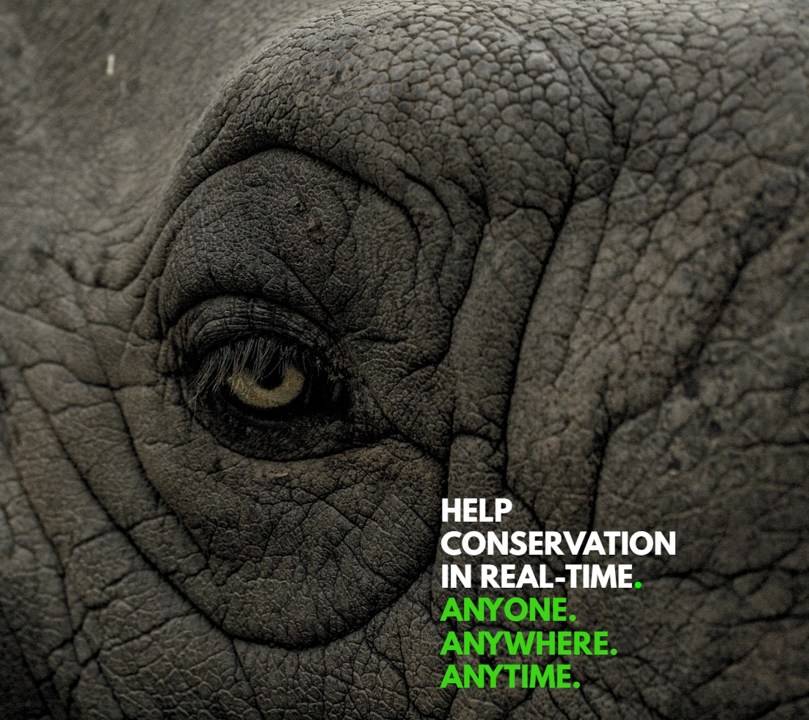
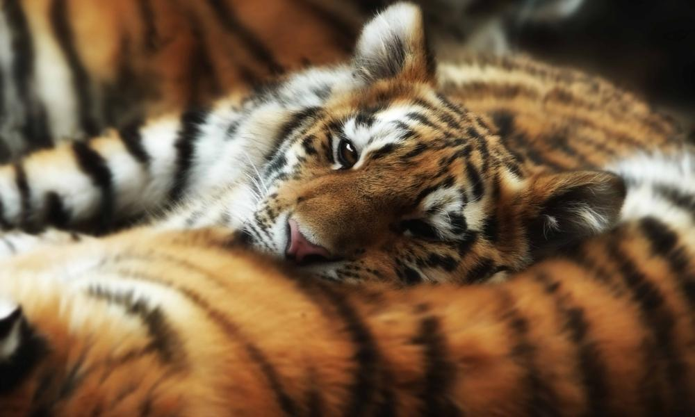

Key Conservation is helping conservationists gain critical funding and global support through a mobile app (in development) that provides real-time updates on day-to-day campaigns.
The Skilled Impact feature enables supporters to give their professional skills to help conservation organizations. For example, a graphic designer could help design an outreach campaign, a mechanic could help fix a patrol vehicle or a drone operator could assist with collecting data on a remote study area.
Tapping into these skills empowers supporters to share their expertise and experience with conservationists that need them to take their mission to the next level. Our hope is that sharing skills will help create a community around the work being done as well as a lifelong connection between an individual and a conservation organization.

pilot projects info



description of joining or something
more words.